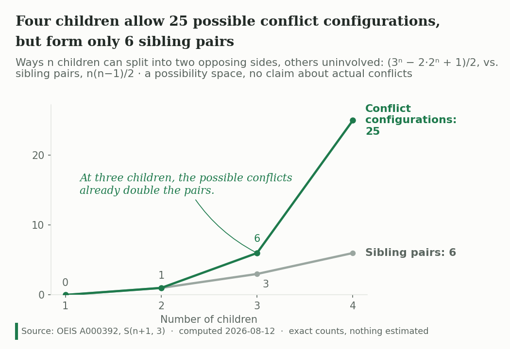

The Combinatorics of Sibling Conflict
A short mathematics paper — not an analytics module. How many ways can n children split into two opposing sides? The answer is a Stirling number, and it grows exponentially.
Mathematics · Preprint · Not a BI module
The Combinatorics of Sibling Conflict
Everything else in this portfolio is a data build. This is not. It is a ~2,000-word mathematics paper with two figures and one table: no client, no pipeline, no dashboard, no dataset. It counts a possibility space and says so.
Read the Paper (PDF) Repository
Status — read this before the rest
Preprint, under consideration at The Mathematical Intelligencer (queried 2026-08-12, reply pending).
To be exact about what that means: a pre-submission query went to the journal’s co-editors-in-chief on 2026-08-12 with the compiled PDF attached, and the reply is pending. Formal submission would follow a green light. The paper is not published, not accepted, and not peer-reviewed. Nothing on this page should be read as a publication credit.
The version linked above is the submitted manuscript. Springer’s preprint policy permits posting the submitted version on a personal site and does not treat it as prior publication (verified 2026-08-12); it is disclosed at formal submission.
The question
I have four children, each two years apart. The number of distinct ways they could get into a fight seemed never-ending, so I counted it.
Formally: a conflict configuration is an unordered pair of disjoint, nonempty subsets of the n children — the two sides — with any remaining children uninvolved. That third category matters. A child can be on side A, on side B, or out of it entirely.
The result
Each child is assigned to side A, side B, or neither, giving 3n assignments. Removing the assignments where either side is empty (2·2n − 1, by inclusion–exclusion) and halving, because the labels A and B are interchangeable, leaves:
\[C(n) = \frac{3^n - 2 \cdot 2^n + 1}{2}\]
This is not an ad hoc expression. It equals S(n+1, 3), a Stirling number of the second kind — OEIS A000392, where the sequence is characterised as exactly this: the disjoint unions of two nonempty subsets of an n-element set.
| Children | Sibling pairs, n(n−1)/2 | Conflict configurations |
|---|---|---|
| 1 | 0 | 0 |
| 2 | 1 | 1 |
| 3 | 3 | 6 |
| 4 | 6 | 25 |
| 5 | 10 | 90 |
| 6 | 15 | 301 |
| 7 | 21 | 966 |
| 8 | 28 | 3,025 |
Four children form six sibling pairs but allow 25 conflict configurations. Eight children form 28 pairs and allow 3,025. Pairs grow quadratically; the conflict space grows exponentially, tracking 3n — each additional child roughly triples it.

![Line chart titled 'Eight children allow 3,025 possible conflict configurations, but form only 28 sibling pairs.' Two series over one to eight children. The green conflict-configuration line is flat until about four children, then climbs steeply through labelled values 90, 301 and 966 to 3,025 at eight children. The grey sibling-pairs line stays flat against the horizontal axis for its whole length, labelled 28 at its right end. An annotation states that each added child roughly triples the space of possible conflicts. Source strip: OEIS A000392, S(n+1, 3), exact counts, nothing estimated.](../assets/sibling-conflict-figure1-narrow.png)
What the paper does not claim
The formula counts a possibility space. It does not predict how often siblings actually fight, how badly, or how any of it turns out. Many families with a large theoretical conflict space stay close; some small families fracture. The caveat is carried in the abstract, in Section 3, and on the face of both figures, because a chart that travels without its paper needs to carry its own limits.
It is also not a novelty claim over the whole field. Bossard (1945) counted family relationships as n(n−1)/2, and Kephart (1950) extended that to subgroupings. Both are cited in the paper, and the claim is narrowed accordingly: this extends the Bossard–Kephart tradition to opposing-sides configurations, and connects it to the coalition-structure-generation literature in cooperative game theory. Adjacent formalism — three-way conflict analysis in the Pawlak tradition — is noted and distinguished: it analyses a given conflict rather than counting the space of them.
How it was checked
- Brute force. All 3n assignments enumerated for n = 1–8, both sides required nonempty, halved for label symmetry. Matches the closed form exactly: 0, 1, 6, 25, 90, 301, 966, 3,025.
- Closed form. Cross-checked against OEIS A000392, whose listed formula a(n) = (1 + 3n−1 − 2n)/2 gives a(n+1) = (3n − 2·2n + 1)/2.
- Prior art. Searched before the novelty claim was written, then the claim was narrowed to fit what the search found rather than the reverse.
- Citations. Every reference vetted to source: Bossard, Kephart, Minuchin, Caplow, McHale et al., Bank & Kahn, Hank & Steinbach, Jensen et al., Rahwan et al., Sandholm et al., Lang et al.
The figures went through the same review as the dashboards
This is the one thing the paper shares with the rest of the portfolio. Both figures were built to Cascadia VIZ-PRINCIPLES v2.5 and scored against CHART-REVIEW v2.5, including two Rule 7.4 reading panels — four blind reviewers per round who see only the rendered chart, at two widths each, with an editor, a quantitative family-studies researcher, a non-technical parent, and a visualization seat.
The panels changed the figures. Round one produced twelve findings, ten of them defects: the “each added child roughly triples it” annotation was asserted but not checkable on the canvas, so value labels at n = 5, 6, 7 were added and the tripling became verifiable by eye; the subtitle gained both “others uninvolved” and the possibility-space caveat because two seats read a claim about real families that the mathematics does not support. Round two ran after the artifact changed to two figures and produced eight more defects — the non-technical seat could not find a four-child family on a chart that started being readable at five, which is why Figure A exists at all.
Three findings were rejected with reasons and five accepted as residual, each recorded. The full disposition tables and panel returns are in the repository.
One exception carries onto this page. Both figures were typeset in DejaVu, substituting for the brand’s Source Serif 4 and Segoe UI, which were unavailable in the build environment; the review recorded that they should be re-rendered with brand fonts if reused on a Cascadia web property. They are shipped here as-is deliberately — these are the exact files that cleared both panels, and re-rendering them would produce charts no panel has read.
Why it is in this portfolio
Because the standard is the same one. The paper states what it measures and what it does not, cites the prior work that narrows its own claim, publishes the review its figures failed and then passed, and describes its status precisely rather than favourably. That is the through-line with every data build here — it just happens to have no data.
Disclosure
Independent work, no funding, no affiliation. Submitted-version preprint posted under Springer’s preprint policy (verified 2026-08-12). The formula is a combinatorial identity; no human subjects, no dataset, and no empirical claim about any family.
Links
- The Paper (PDF) — the submitted manuscript, ~2,000 words, two figures, one table
- Repository — manuscript source, figure build scripts, research record, chart review and both panel returns
- OEIS A000392 — the sequence, S(n+1, 3)
- Cascadia Architecture Overview